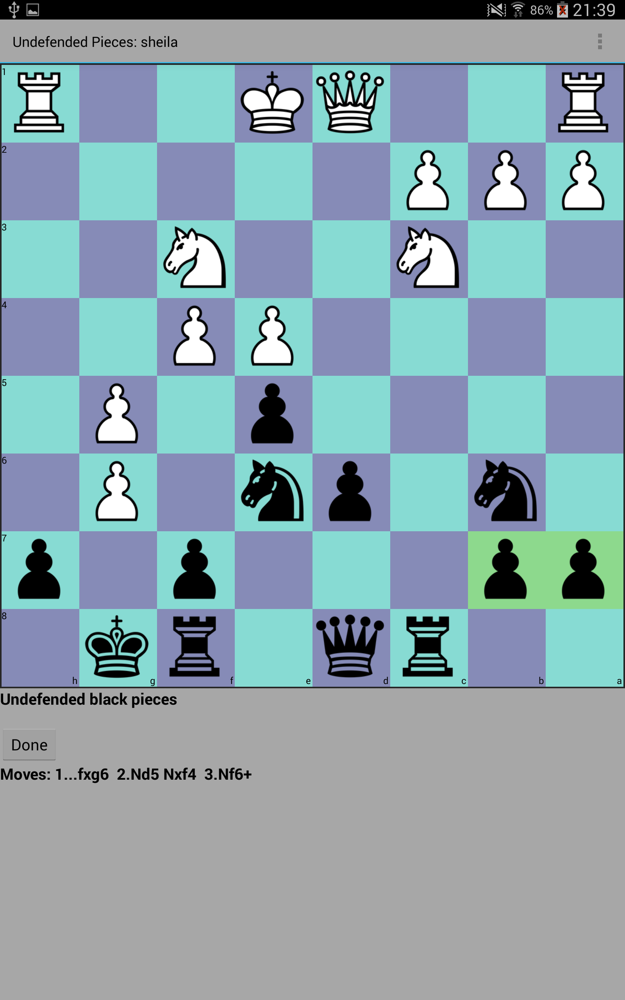
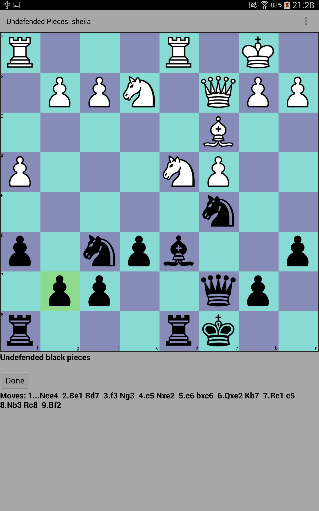

Undefended Pieces
Select all pieces that are undefended. Like in the blindchess challenge, it is possible to control the number of
blind moves in the settingsscreen. The standard level can be used by beginners, to learn to find all the pieces that are undefended.
When the number of blindmoves increases, the difficulty increases as well. Your board visualisation skills will improve by doing these exercises.
Example 1Example 2Example 3Example 4: 2 blindmoves

Calculate 2 moves ahead (1...fxg6 2.Nd5 Nxf4 3.Nf6+), then select all undefended black pieces
Example 5: 4 blindmovesCalculate 4 moves ahead (1.Nd6 Rb8 2.Rg3 Kh7 3.Bh5 g5 4.f4 g4), then select all undefended white pieces
Example 6: 6 blindmovesCalculate 6 moves ahead (1.Nxf6+ gxf6 2.c3 Be7 3.Bh6 Rg8 4.Bc4 f5 5.0-0-0 e4 6.Qh5 Qc7), then select all undefended white pieces
Example 7: 8 blindmoves

Calculate 8 moves ahead (1...Nce4 2.Be1 Rd7 3.f3 Ng3 4.c5 Nxe2 5.c6 bxc6 6.Qxe2 Kb7 7.Rc1 c5 8.Nb3 Rc8 9.Bf2), then select all undefended black pieces
|